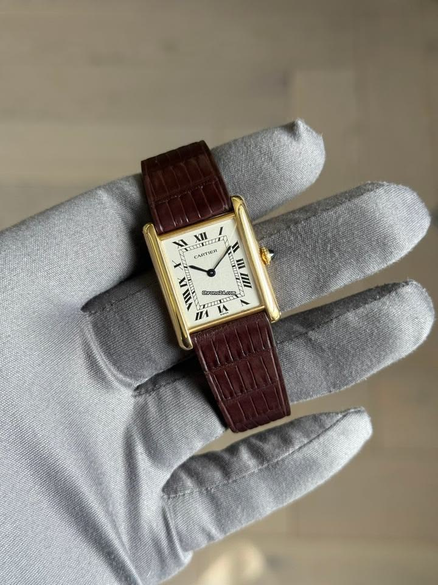
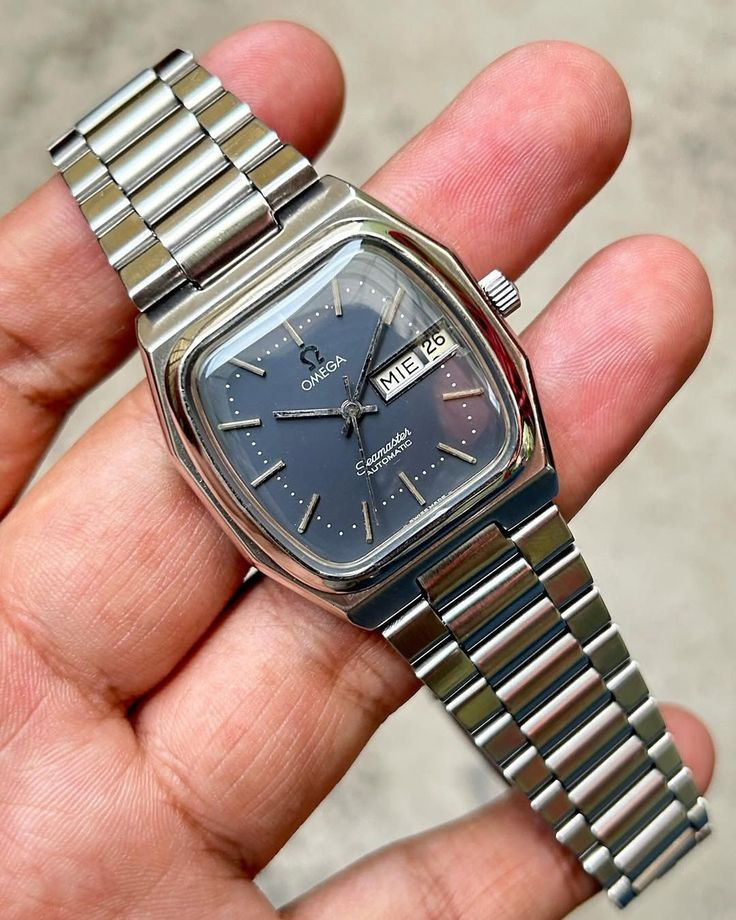
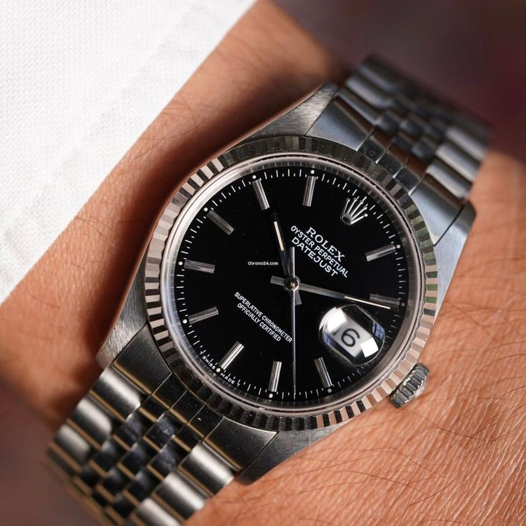
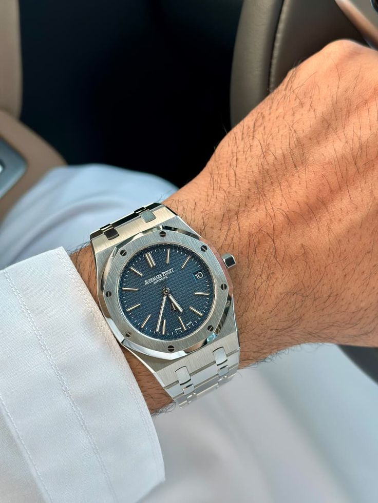
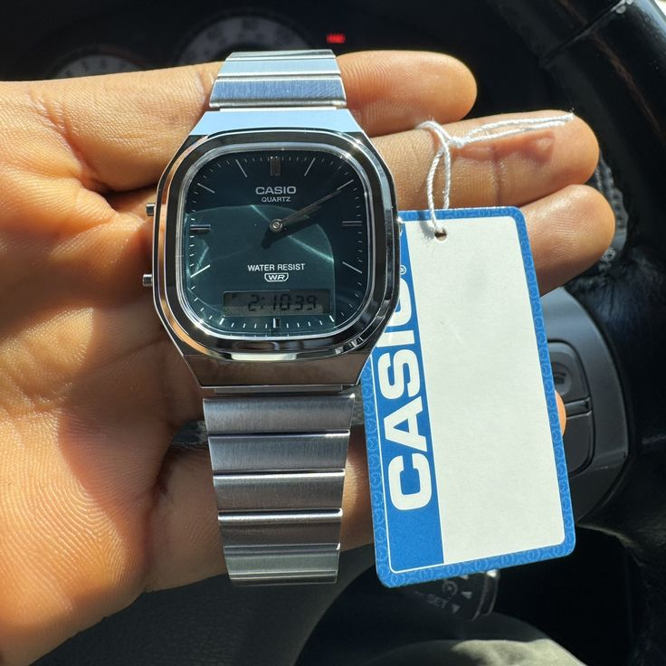
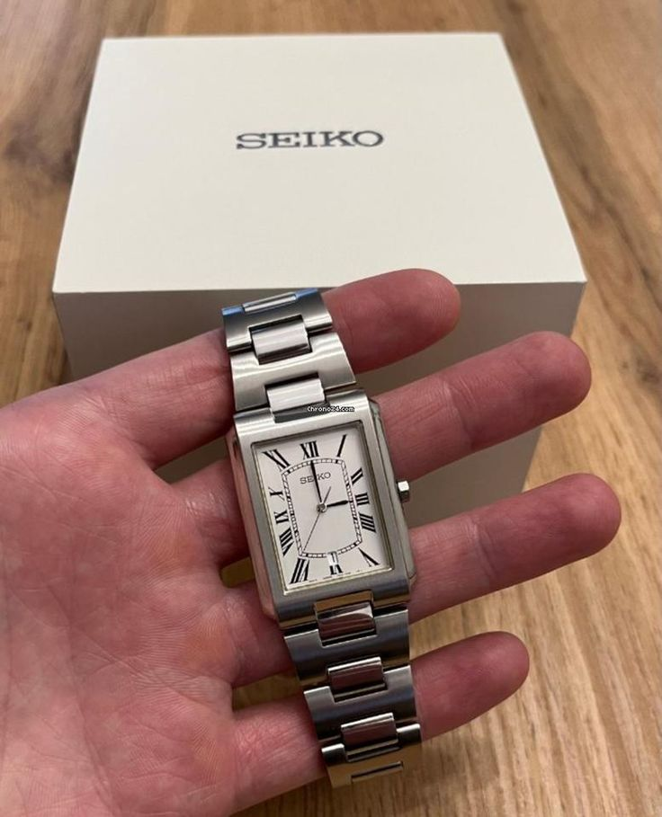

Cartier Tank
Dress watch, rectangular case, timeless design
The Cartier Tank is one of my favorite watch designs because it feels elegant, simple, and recognizable without being loud.
A Personal Collection
Six watches that represent the timeless shapes, details, and character I would love to add to my collection.

Dress watch, rectangular case, timeless design
The Cartier Tank is one of my favorite watch designs because it feels elegant, simple, and recognizable without being loud.

Vintage-inspired sports watch, clean everyday style
The Omega Seamaster appeals to me because it has a classic look that can work casually or dressed up.

Iconic everyday watch, strong design language
The Rolex Datejust stands out because it is one of those watches that feels established and instantly recognizable.

Integrated bracelet, luxury sports watch
The Royal Oak interests me because the case shape and bracelet design make it feel different from most traditional watches.

Affordable digital watch, retro everyday style
I like vintage Casio watches because they are simple, useful, and have a nostalgic look that still feels stylish.

Rectangular case, affordable dress-watch alternative
This kind of Seiko watch fits my taste because it gives a vintage dress-watch look without needing to be overly flashy.